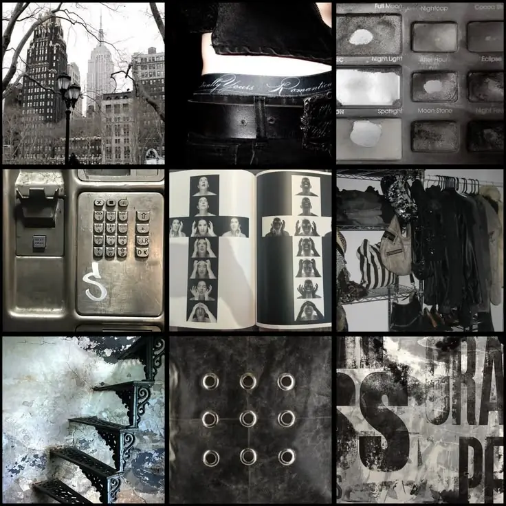
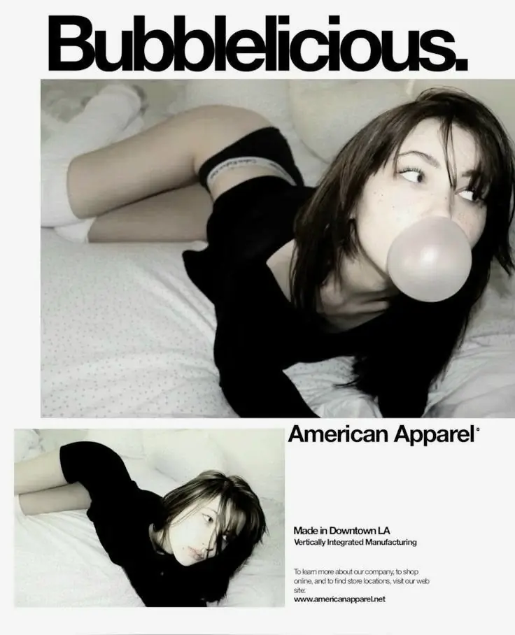

01 / NAVIGATION
MYBRANDNEWBRANDSOBJECTSBAG (02)
가는 선, 넓은 간격, 단단한 정렬. 내비게이션은 장식이 아니라 매거진의 목차처럼.
ISSUE Nº 01 / VISUAL LANGUAGE
90년대 뉴욕의 독립 매거진과 낡은 도시 표면에서 출발한 쇼핑 경험. 매끈함보다 태도, 장식보다 편집의 힘을 앞세운다.

“취향은 완성된 것이 아니라,
수집된 흔적에 가깝다.”
스크래치, 번짐, 낡은 인쇄, 플래시 사진. 불완전한 흔적을 장식이 아닌 정보의 층위로 사용한다.

IMAGE DIRECTION
VISUAL SYSTEM
COLOR / 05
화면의 90%는 흑백으로 유지한다. 강조는 색보다 반전, 크기, 여백으로 만든다.
TYPE SYSTEM
UI TRANSLATION
01 / NAVIGATION
가는 선, 넓은 간격, 단단한 정렬. 내비게이션은 장식이 아니라 매거진의 목차처럼.
02 / PRODUCT CARD
 01/04
01/0403 / CONTROLS
모서리는 최소화하고, 인터랙션은 즉각적으로. 호버 시 반전되는 흑백 대비를 사용한다.
DESIGN PRINCIPLES / 04
장식 요소를 더하기 전에 정보의 크기와 순서를 먼저 편집한다.
질감과 흔적은 절제해 사용하되, 지나치게 깨끗하게 지우지 않는다.
완벽한 모델보다 실제 사람이 고른 듯한 친밀한 장면을 보여준다.
색은 주인공이 아니다. 블랙과 여백이 상품과 취향을 프레이밍한다.